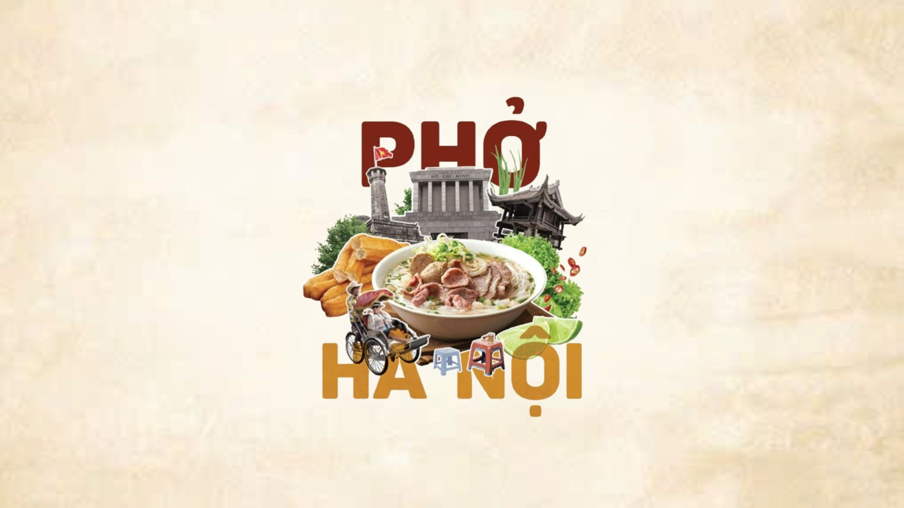

Hà Nội

Phở bò — Biểu tượng ẩm thực Việt
Bún chả — Hương vị lửa than
Bánh cuốn Thanh Trì — Sự tinh tuyển
Cốm Làng Vòng — Hương vị mùa thu Hà Nội
Ẩm thực Hà Nội là một thế giới hương vị thu nhỏ, tinh tế và đậm đà bản sắc. Hành trình nếm thử các món ăn Hà Nội chính là cách để bạn chạm đến linh hồn của Thủ đô nghìn năm văn hiến.
Top các món ngon “phải thử”
- Phở — Biểu tượng ẩm thực Việt: Nước dùng trong vắt, ngọt thanh từ xương hầm; hương quế, hồi; bánh phở mỏng; bò tái/chín hài hòa.
- Bún chả — Hương vị lửa than: Chả viên & chả miếng nướng than hoa, bát nước mắm chua ngọt, ăn cùng bún tươi & rau sống.
- Bánh cuốn Thanh Trì — Sự tinh tuyển: Lớp bánh mỏng như lụa, trong suốt, ăn kèm chả quế & nước chấm đậm đà.
- Cốm Làng Vòng — Hương vị mùa thu: Hạt dẻo mềm, thơm mát, là thức quà thanh tao của đất Tràng An.
Bí quyết thưởng thức như người sành ăn
- Ăn theo mùa: Thu ăn cốm; đông bánh khúc, xôi nóng.
- Tìm quán lâu đời: Hương vị chuẩn thường ở những quán nhỏ gia truyền.
- Kết hợp đúng: Bún chả kèm rau sống, tỏi; phở ăn cùng quẩy để trọn vị.
Bối cảnh & bản sắc
- Thăng Long – Kinh đô ngàn năm: Từ năm 1010, ẩm thực định hình phong cách cầu kỳ nhưng tinh tế.
- Giao thoa Đông – Tây: Dấu ấn Pháp (bánh mì, cà phê) hòa quyện với phở, bún, bánh cuốn… tạo nên diện mạo phong phú.
Ẩm thực Hà Nội là một di sản sống động. Mỗi quán phở, bún chả hay hàng cốm là một lát cắt văn hóa — nơi bạn có thể hiểu hơn về con người và lịch sử Thủ đô.